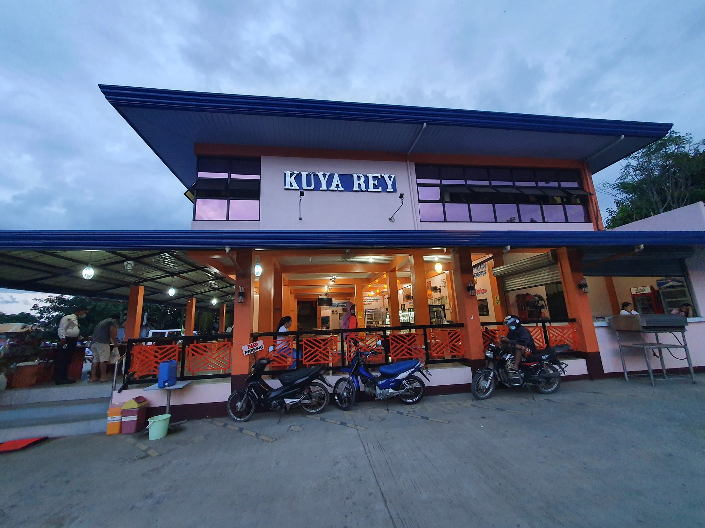

Basa is a type of white fish native to Southeast Asia. It belongs to the catfish family and has a light, firm texture and a mild fish flavor. It is often used as a cheap alternative to cod or haddock due to its similar taste and texture...
Read more...
This is a dish of salmon seasoned with salt, pepper, garlic, lemon and butter, baked in the oven until flaky. It is a low-calorie and high-protein dish that can be served with salad, rice or vegetables....
Read more...
Beef ribs can be a nutritious and delicious way to get the essential vitamins and minerals your body needs. From vitamins B12 and B6 to selenium and zinc, these cuts of beef offer a variety of benefits that are hard to.....
Read more...Tinola is a traditional Filipino comfort food that usually consists of broth, chicken, leafy greens, papaya, and ginger. Fish sauce is a key ingredient that lends a deliciously pungent taste. Chicken tinola is often served with rice...
Read more...Lechon Belly Roll is another way to make crispy lechon belly. The outcome of this recipe is similar to the flavor of lechon Cebu. It is tasty. The inside is tender and moist, while the skin is as crispy as it can be...
Read more...Pork Humba is a type of Filipino stew cooked with garlic, onion, vinegar, soy sauce, bay leaves, brown sugar, Tausi, Banana blossoms, black pepper and rice water. It makes use of pork belly. Pork Humba Recipe is very much like ...
Read more...Good food often leaves quite the impression after even just the first taste. The aroma, the blend of flavors, and the ever-pleasant textures are not easy to forget. And Chicken Barbecue that’s done right....
Read more...It is not actually the dish but the process of preparing it. It hailed from the Visayan region and is derived from the word, kilaw, which means raw or uncooked. The meat, normally a fish, is 'cooked' without the...
Read more...This chicken cur is not only a regular on our meal rotation at home, but it's also one of the dishes I often make for holidays and special occasions. It's easy to make yet packs big flavors. It requires only a handful of ...
Read more...Calderata, from the word caldera, meaning cauldron, is another example of the many Spanish influences in Filipino cuisine. While similar to afritada and mechado in preparation and use of tomatoes, potatoes, carrots,...
Read more...Filipino Pancit Canton is the perfect one-pot meal for family dinners or special occasions. Made with wheat noodles and assorted meat and vegetables, this noodle stir fry is hearty, tasty, and sure to be a family favorite!..
Read more...Lechon Kawali is a popular Filipino pork dish deep-fried to golden perfection. Golden and crunchy on the outside, moist and flavorful on the inside, it makes a tasty appetizer or main dish. A series of simple but important steps ...
Read more...Contact Details
Address: Quirino drive poblacion kidapawan city, Poblacion, Philippines
Email:kuyareyfoodhouse@gmail.com
Mobile:0918 789 7340
Social Media